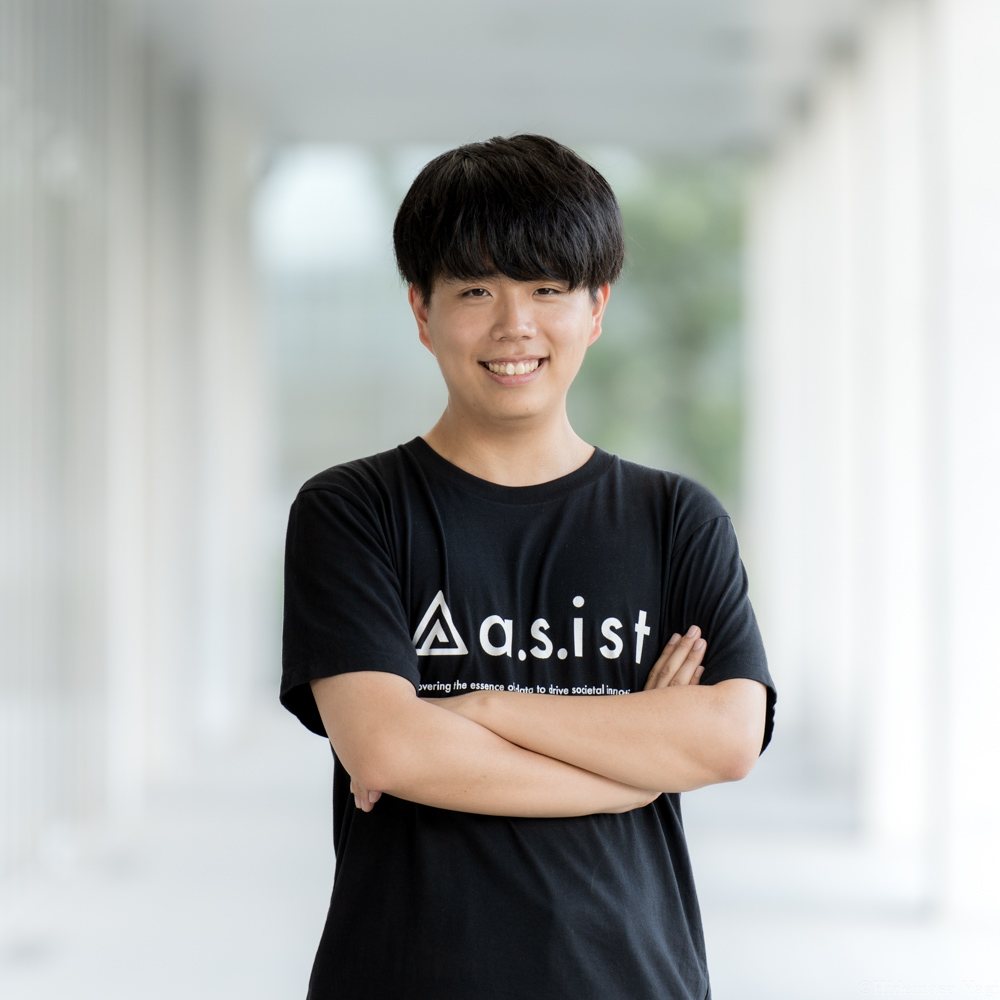

代表取締役CEO
林 悠偉
Yui HAYASHI
東京大学大学院新領域創成科学研究科。大学院ではX線・中性子散乱におけるベイズ推論の研究を行う。 国内スタートアップにて機械学習の研究開発に従事した後、現職。JST BOOST NAISプロジェクト生。
Members
ベイズ推論・機械学習の専門家チームが、研究・製造の現場課題に寄り添った解析ソフトウェアを開発しています。
代表取締役CEO
林 悠偉
Yui HAYASHI
東京大学大学院新領域創成科学研究科。大学院ではX線・中性子散乱におけるベイズ推論の研究を行う。 国内スタートアップにて機械学習の研究開発に従事した後、現職。JST BOOST NAISプロジェクト生。

代表取締役CTO
森口 椋太
Ryota MORIGUCHI
東京大学大学院理学系研究科。大学院ではメスバウアー分光におけるベイズ推論の研究を行う。 国内スタートアップにて機械学習の研究開発に従事し、開発に携わったシステムで特許取得。 未踏2023年度スーパークリエイター。
CRO
竝河 伴裕
Tomohiro NABIKA
東京大学大学院新領域創成科学研究科。大学院では最適化やベイズ推論等の応用数学を用いたデータ解析の研究を行う。 Preferred Networks等の会社にて、マテリアルズインフォマティクスの研究開発に従事した後現職。

データサイエンティスト
清水 将海
Masaumi SHIMIZU
東京大学大学院新領域創成科学研究科。大学院ではスパースモデリングの応用について神経科学、心理学、宇宙線など様々な分野で研究を行う。 美味しいものを食べに行くことが趣味でその手の情報収集には余念がない。

プロダクト統括責任者
塩谷 佳介
Keisuke SHIOYA
東京大学大学院新領域創成科学研究科。大学院ではサル視覚野と機械学習モデルの情報表現の比較に関する研究を行う。 ヤフー、アラヤ、NTTでデータサイエンスや神経科学の研究に従事した後現職。カープファン。

インターン
林 駿佑
Shunsuke HAYASHI
東京大学大学院理学系研究科。大学院ではXAFSにおける化学組成同定のためのベイズ推論を用いた研究を行う。 研究・業務の傍ら家系ラーメンなどを嗜む。最も好きな家系ラーメンは宮里家。

インターン
嶋吉 麟太郎
Rintaro SHIMAYOSHI
東京大学理学部。大学では機械学習を用いた低分子化合物の逆合成解析の研究を行う。 研究・業務の傍らドライブを嗜み、箱根の山道を好む。好きな車はホンダS660。
技術顧問

岡田 真人
Masato OKADA
東京大学大学院新領域創成科学研究科教授。博士（理学）。三菱電機、大阪大学助手、科学技術振興事業団研究員、 理化学研究所BSI副チームリーダーを経て、2004年より現職。物性物理、神経回路モデル等の研究に従事。
データ解析・機械学習に興味のある方、ぜひご連絡ください。